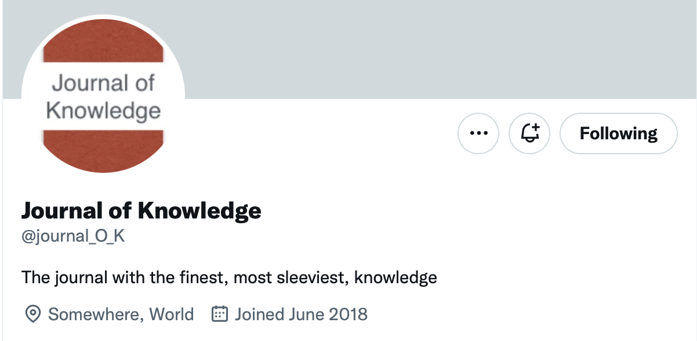
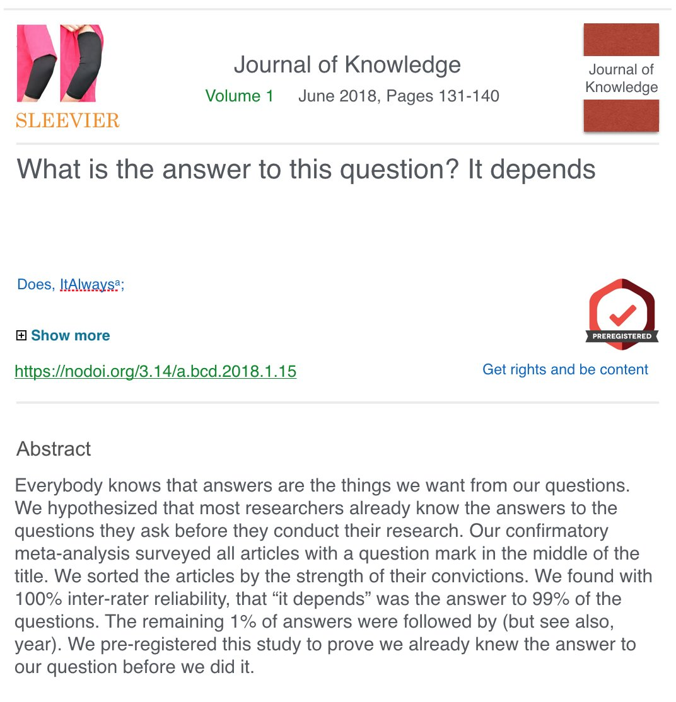
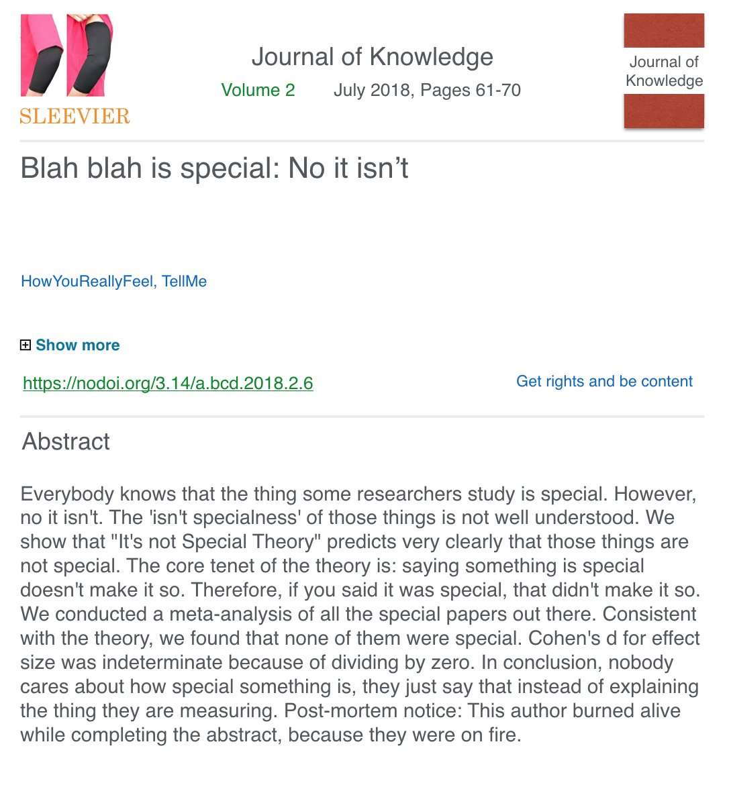
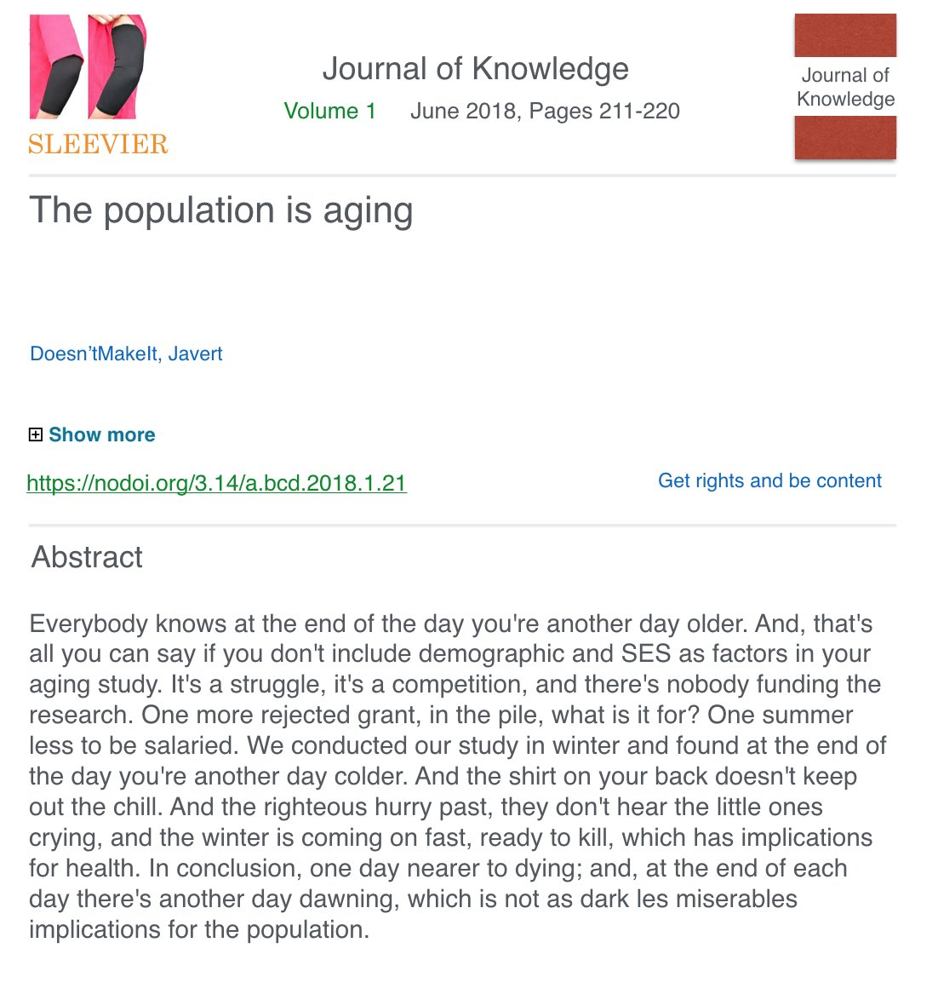
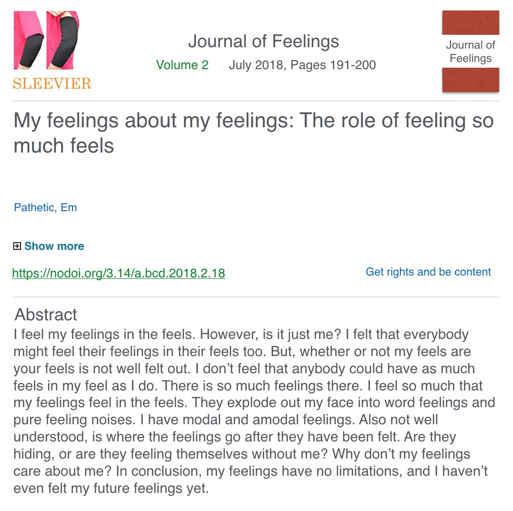
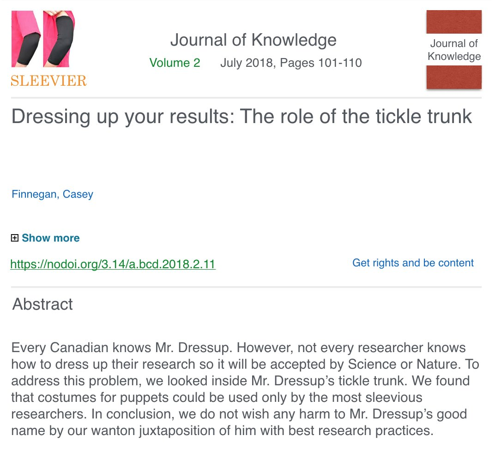

Archiving the journal of knowledge
social
twitter
parody
Attempt to download some previous tweets before deleting an account.
Some time ago I made a journal parody account on twitter called “The Journal of Knowledge” (circa 2018). The account has been inactive for years, and I’m deleting it.
In preparation to delete the account I made a data request to twitter, but I’m not sure what data I get before I close the account. I recently got the rtweet package working, so I’m going to find out if I can use it to download the old posts.
library(rtweet)
auth <- rtweet_app()
JOKE_timeline <- rtweet::get_timeline(user="journal_O_K",
n = 200,
token = auth)
saveRDS(JOKE_timeline,"journal_of_knowledge.RDS")That pulled all 173 tweets from the account into a data frame, and I saved it as an .RDS file so I can load it later. But, this did not download any of the pictures of the fake journal abstracts, and that is what I want to archive.
There’s a function for screenshotting twitter posts, maybe I can use this.
JOKE_timeline$id_str[3]
mgk_img <- tweet_shot(JOKE_timeline$id_str[3], zoom = 3, scale = TRUE)
magick::image_write(mgk_img,"test.png")No, that function was deprecated.
Need to roll my own.
# get urls for images to download
media_urls <- c()
for(i in 1:173){
media_urls[i] <- JOKE_timeline$entities[[i]]$media$media_url
}
media_urls <- media_urls[is.na(media_urls) == FALSE]
# download all the images into folder
?download.file
for (i in 2:length(media_urls)){
f_name <- tail(unlist(strsplit(media_urls[i],"/")),1)
f_path <- paste0("images/",f_name)
download.file(media_urls[i],f_path)
}I think I got what I wanted. Now, I just need to delete some stuff, and then maybe share a few Journal of Knowledge abstracts for posterity.
JOKE abstracts
There were 68 abstracts posted on the account, and I was able to download all of them. Here’s a few of them.
What is the answer to this question? It depends

Blah blah is special: No it isn’t

The population is aging
To the tune of…

Journal of Feelings

Dressing up research results
